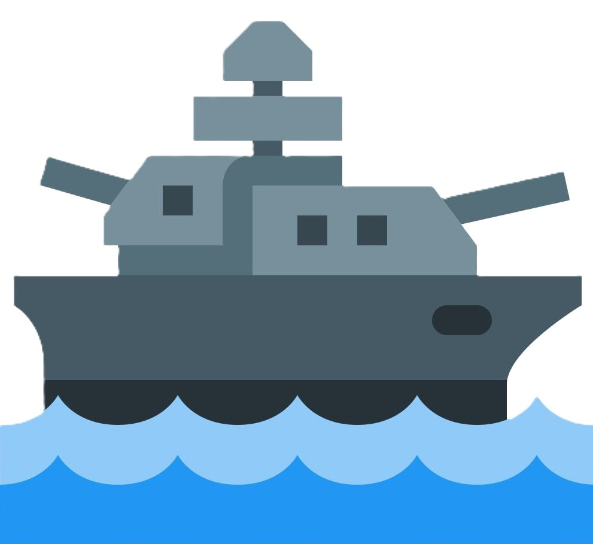
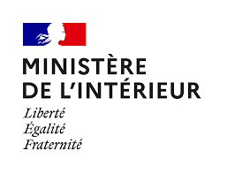

Portfolio
Mes projets
Découvrez les projets scolaires et professionnels réalisés au cours de ma formation BTS SIO SLAM.
Scolaires
Projets académiques
E-Enseignement
Premier site d'e-enseignement avec insertion d'un compilateur C/C++.
📄 Voir le document
Professionnels
Expériences en entreprise
Stage de 1e année
Développement d’un site intranet de gestion d'inventaire d’appareils électroniques en Html/CSS, PHP et SQL
📄 Rapport de stage
Stage de 2e année
Refonte d'une application à l'aide du logiciel no-code Ksaar. Modélisation de bases de données et sensibilisation à l'accessibilité DSFR/RGAA.
📄 Rapport de stage